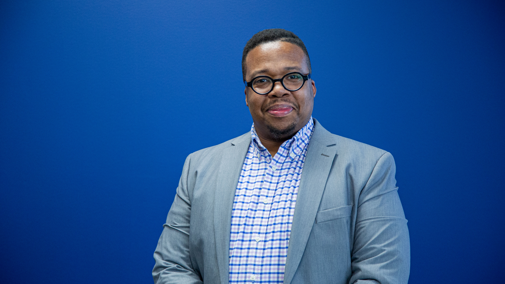

A Force Multiplier Dedicated to Guiding the Professional Growth in Others.
👉 wsublet@gmail.com
Accomplished leader with over 13 years of experience in administrative services, strategic planning, operational efficiency, and team development. Proven expertise in aligning organizational objectives with efficient service delivery, driving innovation, and fostering inclusive environments. Skilled in managing relationships with stakeholders at all levels, implementing transformative solutions, and leveraging technology to enhance productivity. Adept at leading change management efforts and coaching high-performing teams across geographically dispersed locations. Known for strong executive presence, data-driven decision-making, and ability to deliver results in dynamic and fast-paced environments.
11/2022 - Current
💼 Organizational Strategist | RightTouch SolutionAs an Organizational Strategist at RightTouch Solutions, I help mission-driven organizations navigate change, strengthen infrastructure, and build strategies that drive meaningful, long-term impact. I specialize in aligning vision with execution—developing strategic plans, streamlining operations, and leading compliance-focused restructures that improve efficiency and reduce overhead.
I facilitate board retreats and leadership workshops that promote alignment, sharpen governance, and inspire action. I also coach executives and board members on stakeholder engagement, sustainability, and operational clarity.
My work has led to stronger leadership pipelines, increased engagement, and measurable growth in funding through grants and partnerships. At the core, I equip organizations to lead with purpose, operate with excellence, and grow with intention.
05/2013 - 08/2024
💼 North Texas Inclusion Leader | RSM US LLPAs the North Texas Inclusion Leader, I led the strategic development and execution of diversity, equity, and inclusion (DEI) initiatives across the Texas-Oklahoma region. I spearheaded efforts to drive a 25% increase in engagement within Culture, Diversity, and Inclusion (CDI) initiatives, partnering closely with senior stakeholders to ensure that DEI programs aligned with organizational goals. I implemented a comprehensive Employee Resource Group (ERG) governance framework, resulting in a 30% increase in project completion rates and a 15% improvement in cross-functional collaboration. Additionally, I launched the Early Identification Program to create a diverse talent pipeline, engaging students and community groups to increase their interest in corporate career paths. Through my efforts, DEI metrics were established, tracked, and used to provide leadership with data-driven insights that resulted in a 20% increase in program effectiveness.
Incorporating Lean Six Sigma methodologies, I streamlined administrative processes, reducing workloads by 40% and improving access to key information by 20%. I built strong relationships with Employee Resource Groups (ERGs) and senior leadership, ensuring seamless execution of DEI programs. Additionally, I led the onboarding of over 2,000 employees, resulting in a 30% boost in new hire satisfaction. My contributions to digital transformation and process optimization enhanced the efficiency of DEI processes, ensuring sustainability and measurable outcomes.
💼 Central Region Project Coordinator - Operations | RSM US LLPIn my role as Chief of Staff and Project Coordinator for Central Region Operations, I provided strategic leadership and execution of critical initiatives, ensuring alignment with corporate objectives and delivering a 20% improvement in operational efficiency. I managed the day-to-day operations of the National Tax Strategic Management Leader’s office, overseeing long-range planning and stepping in during leadership absences to maintain project momentum. My project management skills were demonstrated in directing complex, high-impact projects, consistently completing them ahead of schedule and mitigating risks effectively.
As a central liaison between senior leaders, I facilitated communication and collaboration across regions, resulting in a 35% improvement in teamwork. I introduced productivity tools and streamlined processes across service lines, driving continuous improvement efforts and enhancing operational capabilities. Additionally, I championed diversity initiatives as Executive Sponsor for the African American Employee Network Group (ENG), boosting engagement by 25% and fostering a more inclusive workplace culture.
05/2013 - 11/2018
At EY, I served as a cross-departmental leader, coordinating efforts between multiple teams to streamline project execution and reduce delivery times by 20%. I was instrumental in policy development and research, ensuring that policies were implemented effectively to meet critical deadlines. My leadership extended to community engagement, where I led the United Way CBS Campaign, surpassing a $1.1 million fundraising goal with a 15% increase in participation.
In addition to driving external initiatives, I played a key role in advancing internal professional development. As the Professional Development Chair for the Black Professional Network, I led programs that promoted the growth and success of network members. I also served as Vice President of Education and Membership for a firm-sponsored Toastmasters group, fostering a culture of learning and development, which increased member engagement and participation. My contributions were recognized through numerous internal accolades, highlighting my commitment to driving both business results and professional development initiatives.